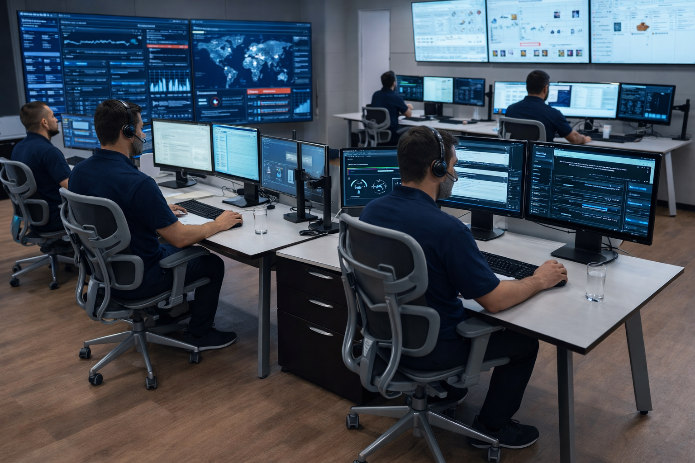
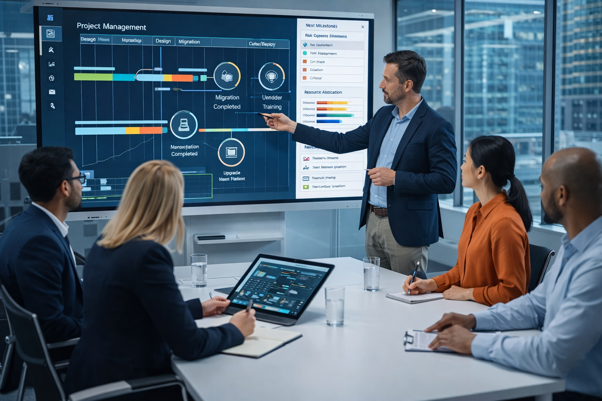

AxisTRS delivers secure, high-performance IT services designed for businesses that depend on reliability.
Continuous monitoring, infrastructure support, cybersecurity protection, and operational oversight to keep your systems performing at peak level.


We manage complex technology initiatives from planning to deployment ensuring every milestone is achieved with precision.
Secure relocation and logistics of critical IT equipment, including servers, racks, and networking hardware.
Office and datacenter technology relocation performed with minimal disruption and maximum operational continuity.
Specialized IT consulting, system architecture, and enterprise technology strategy development.